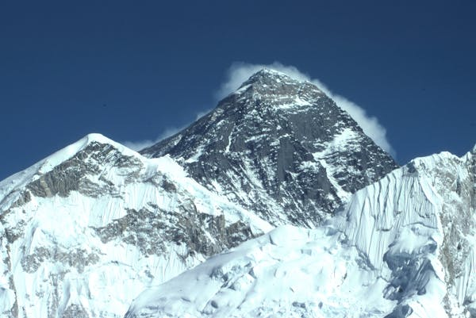
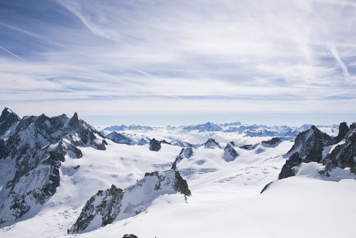
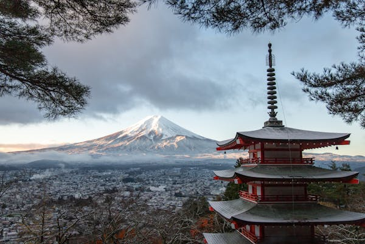
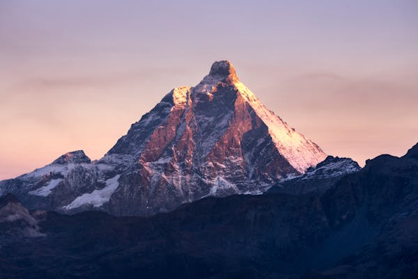
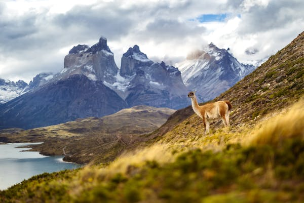

El pico más alto del mundo, ubicado en el Himalaya, es un símbolo de desafío y aventura, con una altura de 8,848 metros.
El punto más alto de los Alpes, el Mont Blanc, ofrece impresionantes vistas y es un paraíso para escaladores y esquiadores.
Un volcán icónico y sagrado, el Monte Fuji destaca por su forma perfectamente cónica y su importancia cultural en Japón.
Famoso por su forma piramidal, el Matterhorn es una de las montañas más fotografiadas y queridas del mundo.
Situadas en la Patagonia chilena, las Torres del Paine son una maravilla natural con imponentes picos y paisajes únicos.
